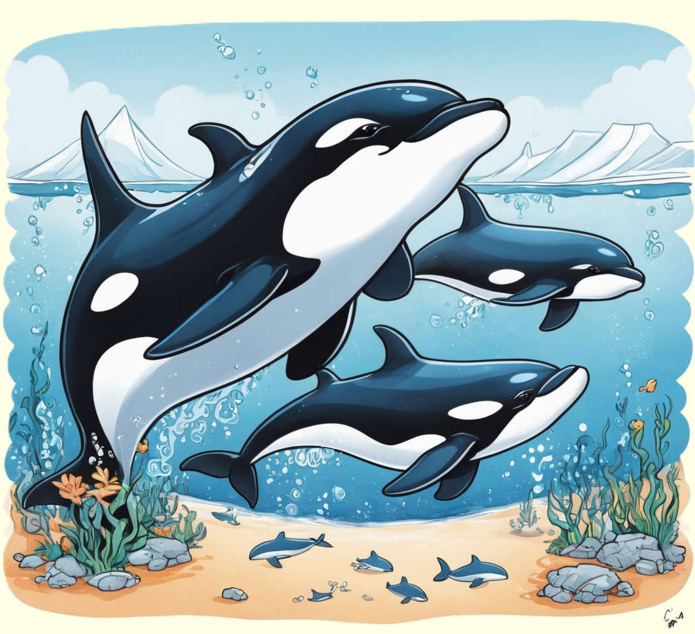

Der Orca, ein faszinierender Meeresbewohner und intelligenter Jäger, beeindruckt mit seinem schwarz-weißen Muster und seiner sozialen Lebensweise.
Entdecke die aufregende Welt dieser majestätischen Wale und erfahre, wie sie in den Ozeanen rund um den Globus leben.

Meeresbewohner mit beeindruckender Intelligenz
Orcas, auch als Killerwale bekannt, sind faszinierende Meeressäuger, die zu den größten Raubtieren der Weltmeere zählen. Mit ihrer charakteristischen schwarz-weißen Zeichnung, ihrem stromlinienförmigen Körper und der markanten Rückenflosse sind sie leicht zu identifizieren. Orcas haben eine bemerkenswerte Intelligenz und leben in komplexen sozialen Gruppen, den sogenannten Pods. Diese Gruppen bestehen aus eng verwandten Tieren und reichen in ihrer Größe von wenigen bis zu über zwanzig Individuen. Orcas kommunizieren miteinander durch komplexe Klick- und Pfeiflaute, die es ihnen ermöglichen, in der weitläufigen Unterwasserumgebung zu navigieren und gemeinsam zu jagen.
Orcas sind vielseitige Jäger und ernähren sich von einer breiten Palette von Beutetieren, darunter Fische, Tintenfische und sogar andere Meeressäuger wie Robben und Delfine. Eine einzigartige Jagdtechnik der Orcas besteht darin, Wellen zu erzeugen, um Robben von Eisschollen zu spülen. Diese beeindruckenden Meeresbewohner haben auch die Fähigkeit, große Gruppen von Fischen zu umkreisen und sie so zu zwingen, sich zu Ballen zu formen, was die Jagd erleichtert. Ihre adaptiven Fähigkeiten und die Zusammenarbeit in den Pods machen Orcas zu faszinierenden und hochentwickelten Meeresbewohnern.
Weltweit verbreitete Meeresgiganten
Orcas sind in den Ozeanen der Welt weit verbreitet und kommen sowohl in den arktischen als auch in den antarktischen Gewässern vor. Es gibt verschiedene Populationen mit spezifischen Lebensräumen, darunter Resident, Transient und Offshore Orcas. Resident Orcas bleiben in der Regel in einem bestimmten Gebiet und ernähren sich hauptsächlich von Fischen, während Transient Orcas größere Distanzen zurücklegen und sich von Meeressäugern ernähren. Der Schutzstatus der Orcas variiert je nach Population und Region, aber viele Orcas stehen unter dem Einfluss von Umweltbedrohungen wie Überfischung, Meeresverschmutzung und Klimawandel.
Weltweit setzen sich Wissenschaftler und Naturschützer dafür ein, die Orcapopulationen zu erforschen und ihre Lebensräume zu schützen. Der Mensch hat eine bedeutende Rolle in der Bedrohung von Orcas gespielt, sei es durch den Verlust von Lebensraum, den Einsatz von Schadstoffen oder den Lärm durch Schiffsverkehr. Die Erhaltung der Ozeane und ihrer Bewohner, einschließlich der Orcas, erfordert daher engagierte Anstrengungen zum Schutz und zur nachhaltigen Nutzung der marinen Umwelt. Orcas bleiben ein faszinierendes Forschungsobjekt und eine Schlüsselspezies für das Verständnis der Komplexität mariner Ökosysteme.